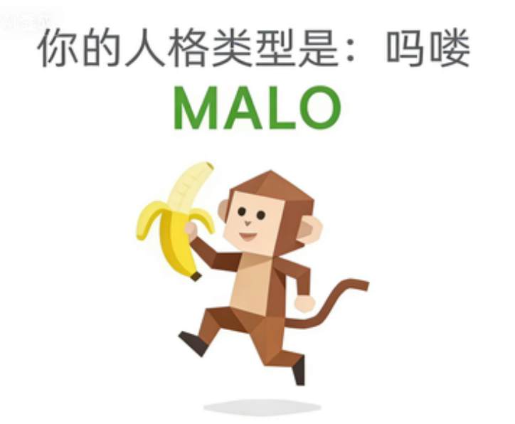

MALO（吗喽）
人生是个副本，而我只是一只吗喽。
朋友，你不是"童心未泯"，你压根就没进化。你的灵魂还停留在那个挂在树上荡秋千、看见香蕉就两眼放光的快乐时代。当人类祖先决定从树上下来、学会直立行走、穿上西装打领带时，吗喽人格的祖先在旁边的大树上看着他们，挠了挠屁股，嘴里发出一声不屑的"吱"。他们看透了一切：所谓的"文明"，不过是一场最无聊、最不好玩的付费游戏。规则偶尔是可以打破的，天花板是用来倒挂的，会议室是用来表演后空翻的。MALO本身就是一个从巨大脑洞里掉出来、忘了关门的奇思妙想。
